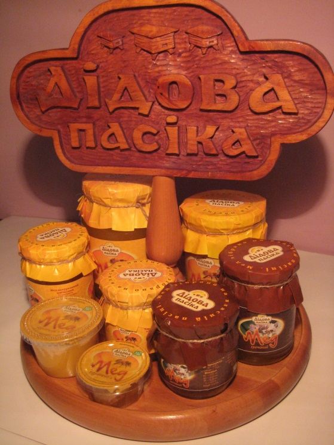

O нас
ФОП Щербак Т.М. - Підприємство з переробки продуктів бджільництва. На базі сучасних технологій проводиться обробка і розфасовка більш ніж 10 видів натурального меду в різноманітну тару. Підприємство має у своїй структурі сучасний цех, фасувальні лінії якого напівавтоматизованих. Виробничий процес відповідає сучасним вимогам харчової промисловості. Продукція користується попитом на національному ринку. Мед ТМ «Дідова Пасіка» - лауреат обласного конкурсу «Краща продукція Харківщини» 2011 року! Це екологічно чистий продукт, який не містить консервантів. У своєму складі мед натуральний має більше 70 органічних речовин, важливих для життєдіяльності організму людини. Мед проведений з нектару медоносних квітів екологічно чистих регіонів України. Мед розфасовується в скляну і пластикову тару, що забезпечує захист від кисню, втрати вологості і ароматичних речовин. Зручність фасування і корисність продукту, вишуканий дизайн, порційна дозування, доступна ціна - ось що приваблює наших покупців. Реалізація в оптових і роздрібних торгових точках. Мед ТМ «Дідова Пасіка» користується популярністю у кінцевих споживачів, які в свою чергу зазначили нетрадиційну фасовку і зручність у використанні продукції нашої торгової марки.

Щербак Тетяна Миколаївна

Диплом |

Продукцiя |

Результат eкспертизи |